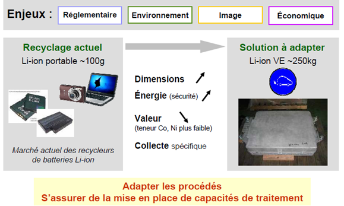
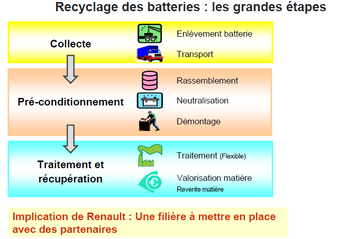

RECYCLAGE DES BATTERIES
Recyclage des batteries lithium une problèmatique spécifique
Durée de vie des batteries : Les batteries des véhicules électriques ont généralement une durée de vie équivalente à celle du véhicule ( 10 ans). Ensuite elles peuvent avoir une "seconde vie", notamment à des fins de stockage d'énergie stationaire (stockage domestique photovoltaique par exemple), leur durée de vie peut donc encore augmenter de 10 ans. La batterie arrivant en fin de vie, la question du recyclage de ses composants se pose.

une batterie lithium de voiture électrique pourra faire partie intégrante du châssis du véhicule. La manipulation est délicate et nécessite des outillages spécialisés. Par ailleurs, le poids peut atteindre 500 kg pour certains véhicules électriques.
Ces batteries sont conçues pour libérer instantanément 100 % de leur puissance afin de propulser un véhicule. Mêmes déchargées et non utilisées pendant plusieurs mois, elles peuvent toujours contenir une énergie résiduelle suffisante pour électrocuter toute personne qui en manipulerait sans équipement de protection.

Quatre technologies différentes sont exploitées : le plomb, le nickel-cadmium, le nickel métal hydrure et le lithium. Trois filières de recyclage sont maîtrisées (plomb, nickel-cadmium et nickel métal hydrure) et même rentables dans le cas du plomb. Le lithium-ion est une filière encore jeune en ce qui concerne sa phase de fin de vie, compte tenu de la récente commercialisation des véhicules équipées de cette technologie de batteries, mais les industriels, conscients des enjeux environnementaux, ont en projet des unités de recyclage futur.
Created with the Personal Edition of HelpNDoc: Free help authoring tool